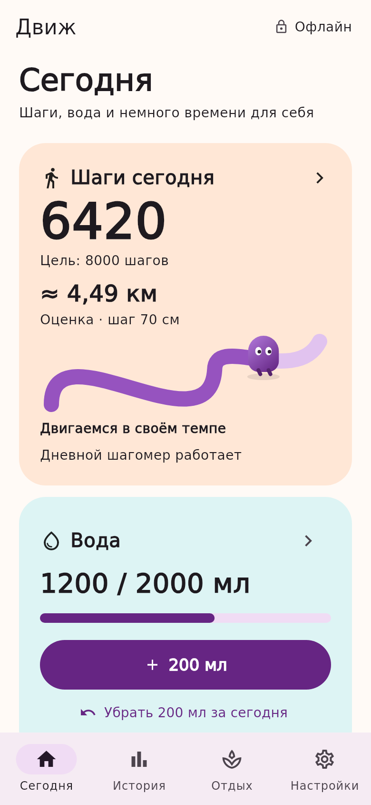
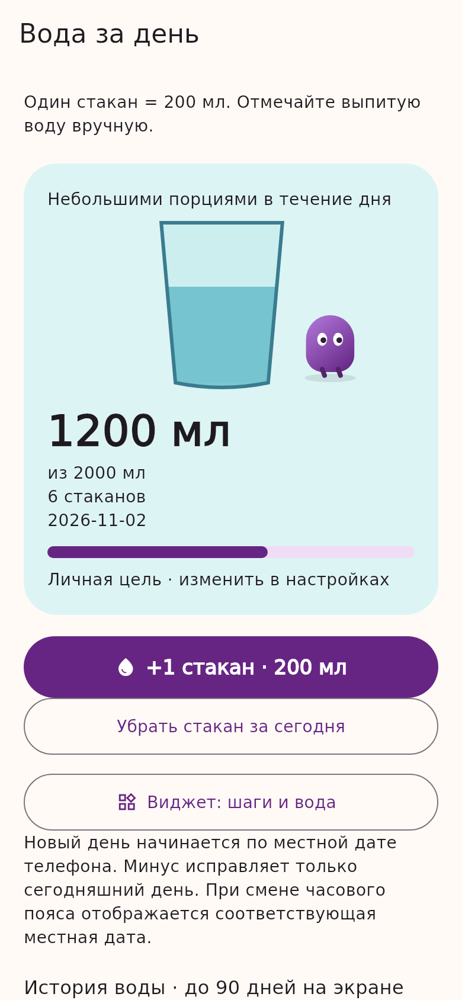
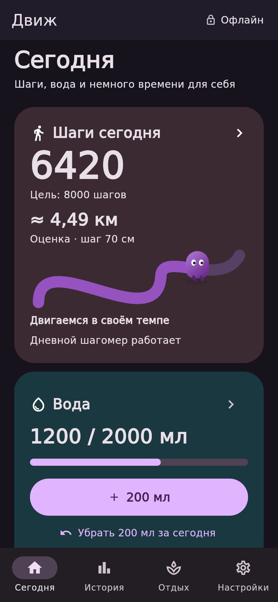
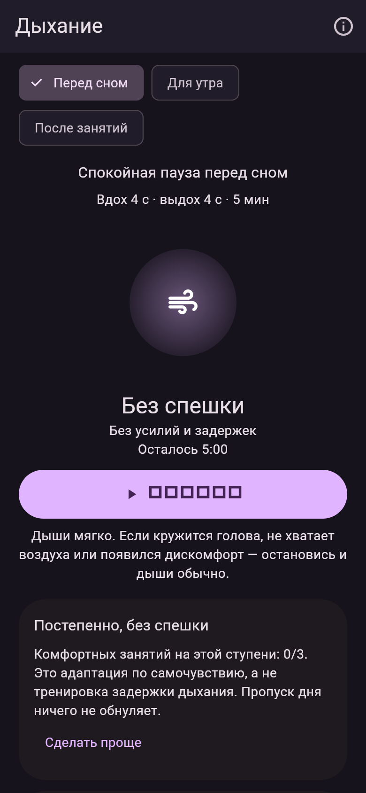

Движение в своём темпе
Дневной шагомер использует системный датчик телефона. Фоновый учёт включается отдельно пользователем.
6 420
пример: шаги за день
Приблизительные километры рассчитываются по длине шага. Цель и длину шага можно настроить.
Шаги, вода и спокойное дыхание перед сном. Орбитакт помогает замечать повседневную активность — без аккаунта, рекламы и постоянного подключения к интернету.
Бесплатная предварительная сборка 3.9.5 для Android ARM64 · 16+. APK загружается с этого сайта. Устанавливайте поверх предыдущей версии без удаления приложения.

Главное — под рукой. Дополнительные функции доступны тогда, когда они нужны.
Дневной шагомер использует системный датчик телефона. Фоновый учёт включается отдельно пользователем.
Приблизительные километры рассчитываются по длине шага. Цель и длину шага можно настроить.
Добавляйте по 200 мл прямо с главного экрана. Ошибочное добавление можно исправить, а историю — посмотреть по дням.
Цель вы выбираете сами. Приложение не назначает норму потребления воды.
«Перед сном»: мягкое дыхание 4/4 → 4,5/4,5 → 5/5 секунды. Следующая ступень — после трёх комфортных занятий и только по вашему выбору. «Ночное небо» и «Бегалка» тоже работают офлайн.
Есть свободный ритм, более длинный выдох и сеансы на 5, 10 или 15 минут. Это режим расслабления, а не лечение бессонницы.
Светлая и тёмная темы, шаги и вода под рукой. А перед сном — спокойный тёмный экран.


Без задержек дыхания и обязательных ежедневных прибавок. Можно сохранить ритм, сделать проще или дышать свободно.
При блокировке экрана занятие ставится на паузу. Прогресс хранится на телефоне, а звуковые подсказки и вибрация включаются по желанию.

Рендеры интерфейса сборки 3.9.5; числа шагов и воды демонстрационные.
У Орбитакта нет аккаунта пользователя и серверной синхронизации истории.
Как устроена приватностьТочность шагов зависит от датчика, положения телефона и прошивки. Мы не заявляем измеренный процент точности для всех устройств. Километры — приблизительная оценка: шаги × длина шага. По умолчанию — 70 см, значение можно изменить в настройках.
Дневной режим рассчитан на фоновую работу после включения пользователем. Android и настройки производителя могут останавливать службу или задерживать показания. После перезагрузки телефона откройте приложение и возобновите подсчёт.
В версии 3.8.2 исправлена потеря отложенного обновления; исправление сохранено в 3.9.5. Доставка показаний и обновление рабочего стола всё равно могут задерживаться. Если цифры меняются лишь после нажатия, пришлите модель телефона, версию Android и приложения через страницу поддержки.
Для основных функций — нет. Дневному шагомеру нужен системный счётчик шагов телефона и разрешение на распознавание активности. Telegram, браузер и сам сайт используют интернет отдельно от офлайн-трекера.
Экспорт и перенос истории пока не реализованы. Удаление приложения или очистка его данных может привести к потере записей. Предварительная и будущая магазинная версии с разными именами пакета имеют отдельные хранилища.
Магазинная версия пока не опубликована. Предварительную сборку 3.9.5 можно скачать кнопкой в начале страницы. Исходники приложения и релизы доступны в репозитории Орбитакта; новости и обратная связь — в Telegram.
Текущая предварительная версия предназначена для пользователей от 16 лет для личного учёта активности. Это не медицинское изделие: приложение не диагностирует и не лечит заболевания.
Новости, обратная связь и тестирование — в сообществе Орбитакта. Об ошибке можно рассказать по готовому шаблону.
Как сообщить о проблеме